We are now interested in obtaining a second-order
sufficient condition for proving optimality of a given test curve  . Looking at the
expansion (2.56) and recalling our earlier discussions, we know
that we want to have
. Looking at the
expansion (2.56) and recalling our earlier discussions, we know
that we want to have
 for all admissible
perturbations, which means having a
strict inequality in (2.61). In addition, we need
some uniformity to be able
to dominate the
for all admissible
perturbations, which means having a
strict inequality in (2.61). In addition, we need
some uniformity to be able
to dominate the
 term.
Since we saw that the
term.
Since we saw that the  -dependent term inside the integral
in (2.61) is the dominant term in the second variation,
it is natural to conjecture--as Legendre did--that having
-dependent term inside the integral
in (2.61) is the dominant term in the second variation,
it is natural to conjecture--as Legendre did--that having
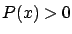
for all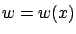
we have
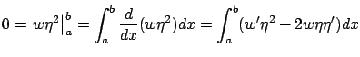
where the first equality follows from the constraint
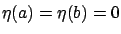
. This lets us rewrite the second variation as
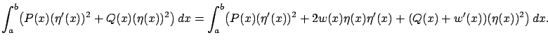
Now, the idea is to find a function
Let us suppose that we found a function  satisfying (2.64).
Then our second variation can be written as
satisfying (2.64).
Then our second variation can be written as
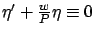
. We also know that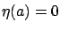
. But there is only one solution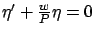
with the zero initial condition, and this solution is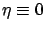
. So, it seems that we have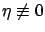
. At this point we challenge the reader to see a gap in the above argument.
The problem with the foregoing reasoning is that the
Riccati differential equation (2.64) may have a finite escape time, i.e., the solution  may not exist on the whole interval
may not exist on the whole interval  .
For example, if
.
For example, if
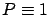
and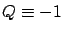
then (2.64) becomes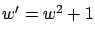
. Its solution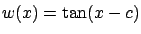
, where the constant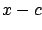
is an odd integer multiple of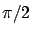
. This means that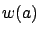
if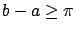
.We see that a sufficient condition for optimality should involve, in addition to an inequality like
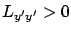
holding pointwise along the curve, some ``global" considerations applied to the entire curve. In fact, this becomes intuitively clear if we observe that a concatenation of optimal curves is not necessarily optimal. For example, consider the two great-circle arcs on a sphere shown in Figure 2.13. Each arc minimizes the distance between its endpoints, but this statement is no longer true for their concatenation--even when compared with nearby curves. At the same time, the concatenated arc would still satisfy any pointwise condition fulfilled by the two pieces.
|
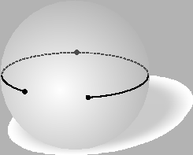 |
So, we need to ensure the existence of a solution for the
differential equation (2.64) on the whole interval  .
This issue, which escaped Legendre's attention, was pointed out by
Lagrange in 1797.
However, it was only in 1837, after 50 years had passed since Legendre's
investigation, that Jacobi closed the gap by
providing a missing ingredient which we now describe.
The first step is to reduce the quadratic first-order
differential equation (2.64)
to another differential equation, linear but of second
order, by
making the substitution
.
This issue, which escaped Legendre's attention, was pointed out by
Lagrange in 1797.
However, it was only in 1837, after 50 years had passed since Legendre's
investigation, that Jacobi closed the gap by
providing a missing ingredient which we now describe.
The first step is to reduce the quadratic first-order
differential equation (2.64)
to another differential equation, linear but of second
order, by
making the substitution
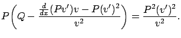
Multiplying both sides of this equation by
Since (2.67) is a second-order differential equation, the initial
data at  needed to uniquely
specify a solution consists of
needed to uniquely
specify a solution consists of
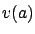
and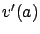
. In addition, note that if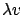
is also a solution for every constant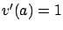
(since we are not interested in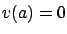
. A point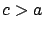
is said to be conjugate to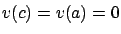
(see Figure 2.14). It is clear that conjugate points are completely determined by
Conjugate points have a number of interesting properties and
interpretations, and their
theory is outside the scope of this book. We do mention the following
interesting
fact, which involves a concept that we will see again later when proving
the maximum principle. If we consider two neighboring extremals (solutions of the
Euler-Lagrange equation) starting from the same point at  , and if
, and if  is a point
conjugate to
is a point
conjugate to  , then at
, then at  the distance between these two extremals
becomes small (an infinitesimal of higher order) relative to the distance between the two extremals as well as between their derivatives over
the distance between these two extremals
becomes small (an infinitesimal of higher order) relative to the distance between the two extremals as well as between their derivatives over  .
As their distance over
.
As their distance over  approaches 0, the two extremals
actually intersect at a point whose
approaches 0, the two extremals
actually intersect at a point whose  -coordinate approaches
-coordinate approaches  . The reason behind
this phenomenon is that
the Jacobi equation is, approximately, the differential equation satisfied
by the difference between two neighboring extremals; the next exercise makes this
statement
precise.
. The reason behind
this phenomenon is that
the Jacobi equation is, approximately, the differential equation satisfied
by the difference between two neighboring extremals; the next exercise makes this
statement
precise.
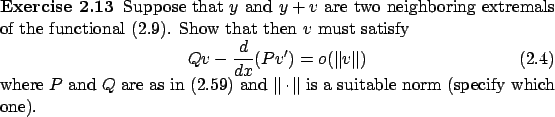
We see from (2.68) that  , which is
the difference between the two extremals,
satisfies the Jacobi equation (2.67) modulo terms of higher order.
A linear differential equation that describes,
within terms of higher order, the propagation
of the difference between two nearby solutions
of a given differential equation is called the variational equation
(corresponding to the given differential equation). In
this sense, the Jacobi equation is the variational equation for the Euler-Lagrange equation.
This property
can be shown to imply the claims we made before the exercise.
Intuitively speaking,
a conjugate point is where different neighboring extremals
starting from the same point meet again (approximately). If we revisit
the example of shortest-distance curves on a sphere, we see that conjugate points
correspond to diametrically
opposite points: all extremals
(which are great-circle arcs)
with a given initial point intersect after completing half a circle.
We will encounter the concept of a variational equation again in Section 4.2.4.
, which is
the difference between the two extremals,
satisfies the Jacobi equation (2.67) modulo terms of higher order.
A linear differential equation that describes,
within terms of higher order, the propagation
of the difference between two nearby solutions
of a given differential equation is called the variational equation
(corresponding to the given differential equation). In
this sense, the Jacobi equation is the variational equation for the Euler-Lagrange equation.
This property
can be shown to imply the claims we made before the exercise.
Intuitively speaking,
a conjugate point is where different neighboring extremals
starting from the same point meet again (approximately). If we revisit
the example of shortest-distance curves on a sphere, we see that conjugate points
correspond to diametrically
opposite points: all extremals
(which are great-circle arcs)
with a given initial point intersect after completing half a circle.
We will encounter the concept of a variational equation again in Section 4.2.4.
Now, suppose that the interval  contains no points conjugate to
contains no points conjugate to  .
Let us see how this may help us in our task of finding a solution
.
Let us see how this may help us in our task of finding a solution  of the
Jacobi equation (2.67) that does not equal 0 anywhere on
of the
Jacobi equation (2.67) that does not equal 0 anywhere on  .
The absence of conjugate points means, by definition, that the solution with the
initial
data
and
never returns to 0 on
.
The absence of conjugate points means, by definition, that the solution with the
initial
data
and
never returns to 0 on  . This is not yet
a desired solution because we cannot have
.
What we can do, however, is make
very small but positive. Using the property of continuity with respect to
initial conditions for solutions of differential equations, it is possible to
show that
such a solution will remain positive everywhere on
. This is not yet
a desired solution because we cannot have
.
What we can do, however, is make
very small but positive. Using the property of continuity with respect to
initial conditions for solutions of differential equations, it is possible to
show that
such a solution will remain positive everywhere on  .
.
In view of our earlier discussion, we conclude that the second variation
 is positive definite (on the space of admissible perturbations)
if
for all
is positive definite (on the space of admissible perturbations)
if
for all  and there are no points conjugate to
and there are no points conjugate to  on
on  .
We remark in passing that the absence of points conjugate to
.
We remark in passing that the absence of points conjugate to  on
on
 is also a necessary condition for
is also a necessary condition for
 to be positive definite, and if
to be positive definite, and if
 is positive semidefinite then no interior point of
is positive semidefinite then no interior point of  can be conjugate to
can be conjugate to  .
We are now ready to state the following second-order sufficient condition
for optimality: An extremal
.
We are now ready to state the following second-order sufficient condition
for optimality: An extremal  is a strict minimum if
is a strict minimum if
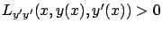
for allNote that we do not yet have a proof of this result. Referring to the second-order expansion (2.56), we know that under the conditions just listed
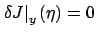
(since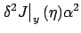
dominates the higher-order term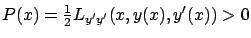
on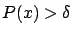
for all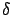
further towards 0 if necessary, we can ensure that no points conjugate to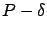
(thanks to continuity of solutions of the accessory equation with respect to parameter variations). This guarantees that the functional (2.69) is still positive definite, henceIn light of our earlier derivation of Legendre's condition, we know that the term depending on
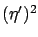
is in some sense the dominant term in (2.60), and the inequality (2.70) indicates that we are in good shape. Formally, we can handle the other,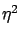
-dependent term in (2.60) as follows. Use the Cauchy-Schwarz inequality with respect to the
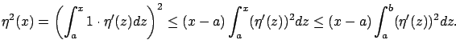
From this, we have
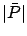
and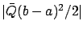
are smaller than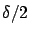
for all
The above sufficient condition is not
as constructive and practical as the first-order and second-order
necessary conditions,
because to apply it one needs to study conjugate points.
The simpler necessary conditions can be exploited first, to see
if they help narrow down candidates for an optimal solution. It should be observed,
though, that the existence of conjugate points can be ruled out if the interval
 is taken to be sufficiently small.
is taken to be sufficiently small.
As for the multiple-degrees-of-freedom setting, let us make the simplifying assumption that
is a symmetric matrix (i.e.,
for all
 ). Then it is not difficult to show, following steps similar to those that led us to (2.58), that the second variation
). Then it is not difficult to show, following steps similar to those that led us to (2.58), that the second variation
 is given
by the formula
is given
by the formula
where and are symmetric matrices still defined by (2.59). In place of
(note that denotes the derivative of , not the transpose). This quadratic differential equation is reduced to the second-order linear matrix differential equation by the substitution , where